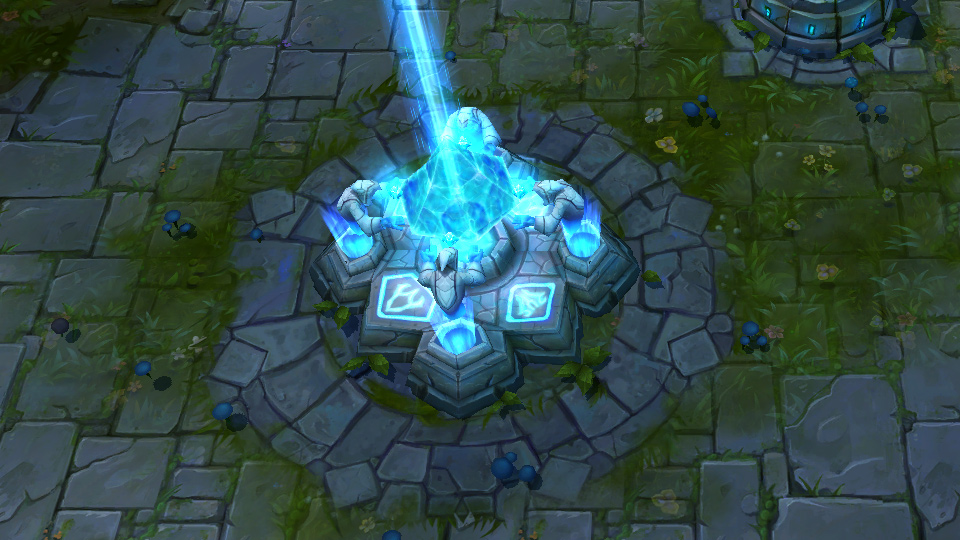

|  |
Inibidores |
Estruturas importantes conhecidas como inibidores estão localizadas onde as rotas se ligam à base nos dois lados do mapa. Destruir um inibidor cria uma poderosa super-tropa toda vez que novas tropas surgem na rota. Super-tropas são extremamente resistentes, ideais para liderar a investida contra o nexus inimigo. Os inibidores ressurgem depois de cinco minutos, aproveite sua vantagem nesse intervalo. Destruir os três inibidores de um inimigo fará com que surjam duas super-tropas em cada rota toda vez que tropas são criadas. |